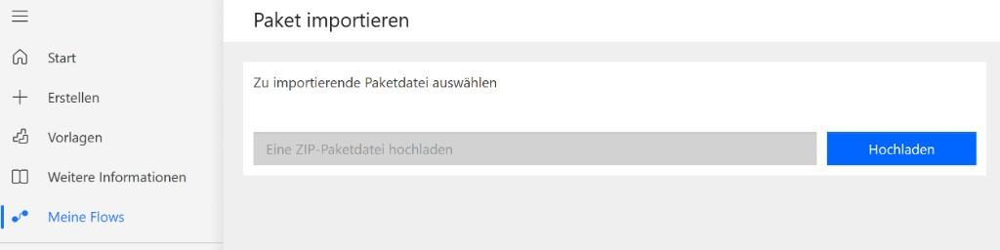

7 Schritte
Freistellung KV + Direktion
Schritt 1: Schule vorbereiten (Checkliste).
Schule vorbereiten
Environment & Rechte in Power Automate / Entra (Checkliste). Postfächer und Genehmiger folgen in Schritt 2. Große Ansicht
Konten & Genehmiger
Technik-Konto für Power Automate, Direktion (Genehmiger) und Absender der Status-Mails. Diese Werte landen später im Flow-Paket.
Genehmigung & Flow-Konten
Per Microsoft-365-Suche wählen oder E-Mail eintragen.
Mit diesem Konto in Power Automate anmelden, Flow importieren und alle Connections verbinden – nicht mit einem persönlichen Lehrer-/IT-Konto.
Auch Sonderfall „KV = Direktion“. Diese Adresse erhält im Planer die Rolle Direktion.
Nur bei separatem freigegebenen Postfach Haken entfernen; dann braucht das Technik-Konto „Senden als“ auf diese Adresse.
SharePoint-Liste anlegen
Website und Liste „Freistellungen“. Mit „Liste anlegen / prüfen“ werden Spalten und Basis-Rechte gesetzt (Technik-Konto, KV-Gestaltung).
SharePoint & Liste
Website, Listenname und ID nach dem ersten Anlegen.
Beim Anlegen/Prüfen: Technik-Konto Vollzugriff (Flow), KV „Gestaltung“ (nicht nur Bearbeiten – sonst bei Elementregel „nur eigene“ keine fremden Anträge sichtbar).
Protokoll
Klassen
Auswahlwerte für die SharePoint-Spalte „Klasse“ – aus Stammdaten bzw. eigenen Einträgen.
Klassen aus Stammdaten
Klassen (1A, 1B, …) als Auswahl in der Spalte „Klasse“.
Quelle: App-Daten v2. Pflege: Stammdaten → Klassen. Zuerst bereinigen, dann SharePoint aktualisieren.
Einstellungen
Antrags-Kategorien für Schüler- und KV-Formulare (Standard-Kategorien sind voreingestellt). Weitere Optionen können hier später ergänzt werden.
Antrags-Kategorien
Zusätzliche Kategorien ergänzen und die SharePoint-Auswahl aktualisieren.
Berechtigungen (Entra)
Wer den Freistellungs-Planer sieht: Schüler-, KV- und Direktions-Gruppen. Die Genehmigung selbst läuft weiter über Microsoft Approvals.
Zugriff auf den Planer
Pro Zeile eine Entra-Gruppe oder Person und die Planer-Rollen (mehrere möglich) – dann „Gruppen speichern“.
Admin = Planer-Administration (IT) · Direktion = Gesamtübersicht · Klassenvorstand = KV · Schüler = eigene Anträge. Mehrere Häkchen pro Zeile möglich.
Jahrgang (optional – nur Freistellungs-Planer, nicht Dashboard)
Mitglieder einer Jahrgangs-Entra-Gruppe sehen Freistellungen der Klassen dieses Jahrgangs (KV-Ansicht).
In der IT-Bibliothek landet das in config/permissions-freistellung.json.
Gruppen-JSON: SiteAssets/ms365/freistellung-planer-groups.json. Beim Listen-Anlegen (Schritt 3) werden Listen-Rechte gesetzt; hier speichern Sie die Planer-Gruppen für den Browser der Nutzer.
Flow-Paket & Import
ZIP herunterladen und in Power Automate importieren – mit dem Technik-Konto aus Schritt 2.
Das Paket basiert auf Flow v3 (sequentielle Genehmigung KV → Direktion, Kommentare/Audit, Mehrtages-Logik). Site, Listen-ID, Genehmiger und Technik-Konto kommen aus den vorherigen Schritten.
Technik-Konto: …
- Browser abmelden oder privates Fenster – in Power Automate mit dem Technik-Konto anmelden (nicht mit einem persönlichen Konto).
- Links Meine Flows öffnen.
- Oben Importieren → Import Package (Legacy) wählen.
- Auf der Seite Paket importieren das heruntergeladene ZIP mit Hochladen auswählen (siehe Screenshot).

- Bei jeder Connection (SharePoint, Approvals, Outlook): Auswählen → mit dem Technik-Konto verbinden (alle drei dieselbe Anmeldung).
- Import abschließen, den Flow öffnen und Einschalten (Toggle).
- Test: in der Freistellungsliste ein Testelement anlegen und die Genehmigung prüfen.
Später (wenn ihr Solutions nutzt): derselbe Ablauf über Solutions → Importieren. Für den Start reicht das Legacy-Paket.
Was der Flow macht
- Trigger: neues Element in der Freistellungsliste (Polling, typisch wenige Minuten).
- Wenn Klassenvorstand-E-Mail = Direktion → Genehmigung an die Direktion (Sonderpfad).
- Sonst: 1 Tag nur KV; mehrtägig sequentiell KV → Direktion; Kommentare/Audit zurück in die Liste.
- Status in SharePoint + Status-Mail an den Antragsteller.